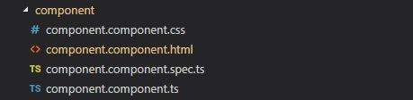

where,
component.component.css contains the CSS styles for the component
component.component.html is the HTML template for the component
component.component.spec.ts is the file for unit testing the component
component.component.ts is the typescript file containing the logic for the component
Components can either be created manually or automatically using the CLI command.
CLI command:
> ng generate component component-name
or
> ng g c component-name
Creating the component using the CLI will automatically import the component for usage in app.module.ts
Manual:
1. create the folder and the *.component.ts, *.component.html, *.component.css as required
2. export the component class so it can be used externally
3. import the component in the app.module.ts and add it to the Angular Module declarations array